Рецепты
Мы подобрали 42 рецепта
♡
Паста с грибами
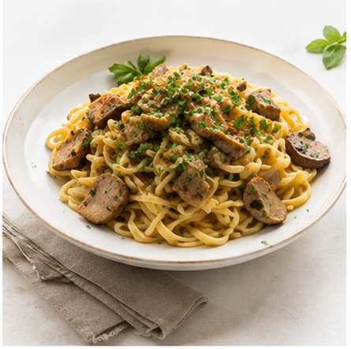
Паста с грибами
и сливочным соусом
◷ 25 мин ▥ Легко ♙ 2 порции
♡
Салат с курицей
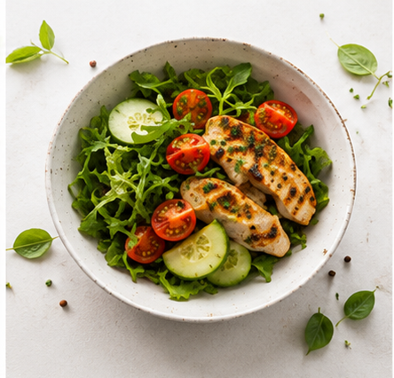
Салат с курицей
и свежими овощами
◷ 20 мин ▥ Легко ♙ 2 порции
♡
Жареный рис
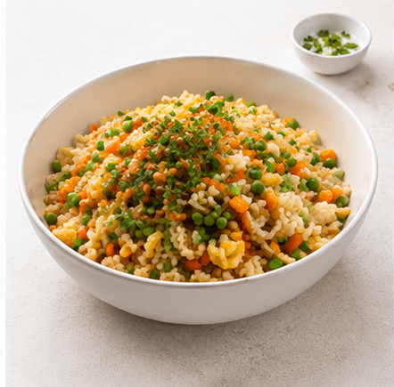
Жареный рис
с овощами и яйцом
◷ 30 мин ▥ Средне ♙ 2 порции
♡
Крем-суп из тыквы
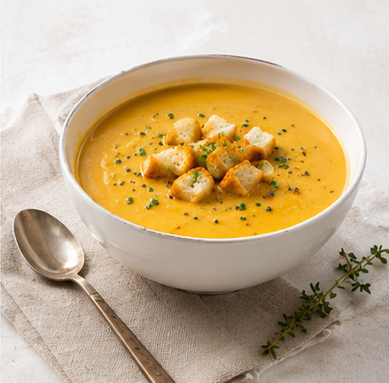
Крем-суп из тыквы
с сухариками
◷ 35 мин ▥ Легко ♙ 2 порции
♡
Запеканка из кабачков
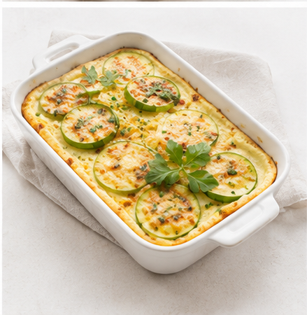
Запеканка из кабачков
с сыром
◷ 40 мин ▥ Средне ♙ 3 порции
♡
Омлет с помидорами
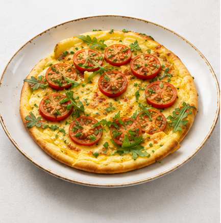
Омлет с помидорами
и зеленью
◷ 15 мин ▥ Легко ♙ 1 порция
♡
Курица с картофелем
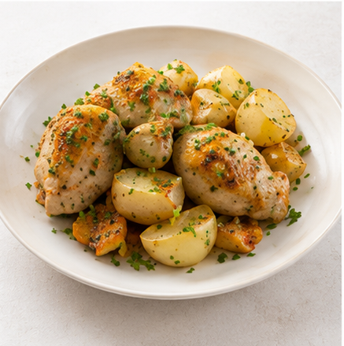
Курица с картофелем
в духовке
◷ 60 мин ▥ Средне ♙ 2 порции
♡
Чечевичный суп
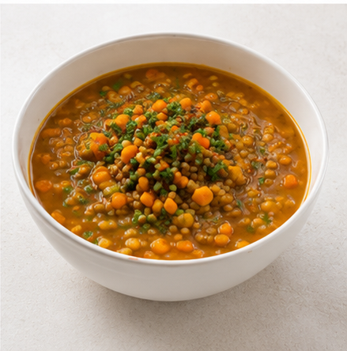
Чечевичный суп
с овощами
◷ 35 мин ▥ Легко ♙ 3 порции
♡
Запечённая рыба
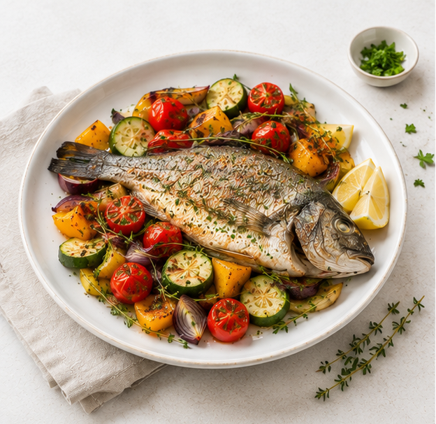
Запечённая рыба
с овощами
◷ 25 мин ▥ Легко ♙ 2 порции
♡
Говяжье рагу
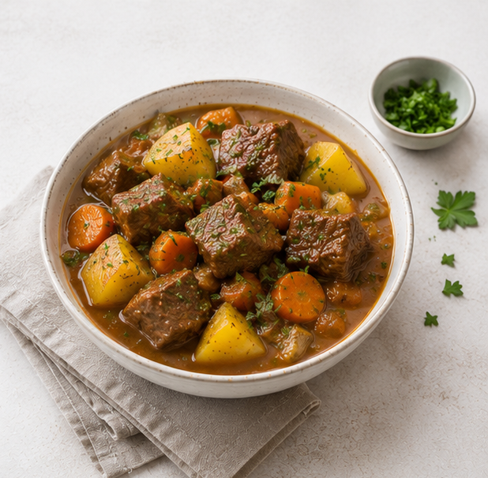
Говяжье рагу
с картофелем
◷ 50 мин ▥ Средне ♙ 4 порции
♡
Фруктовый смузи
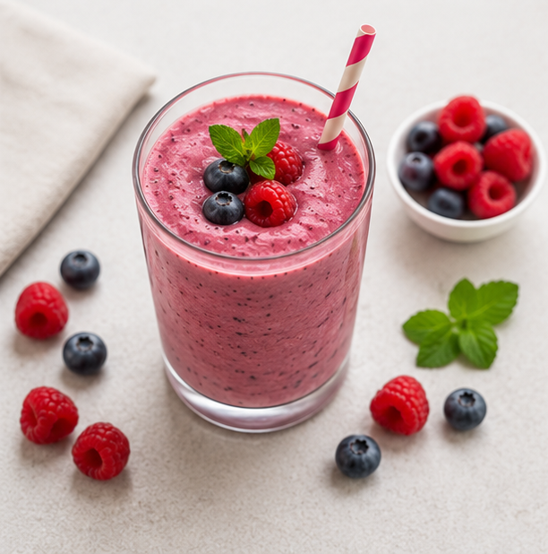
Фруктовый смузи
с ягодами
◷ 10 мин ▥ Легко ♙ 1 порция
♡
Макаронная запеканка
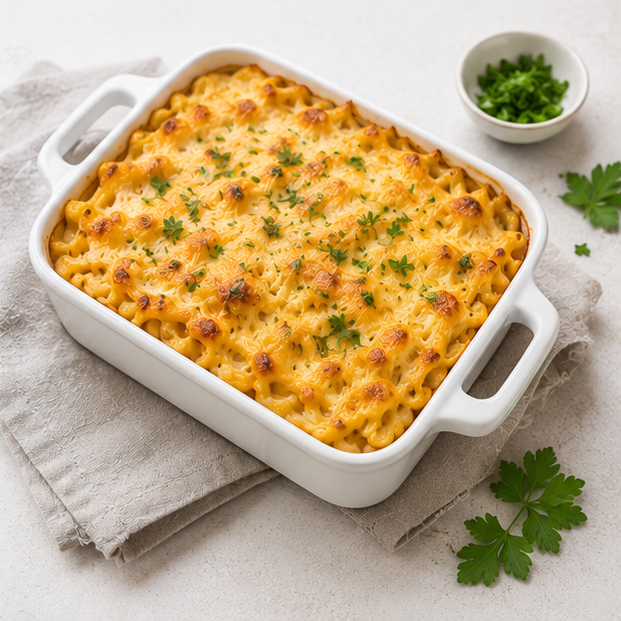
Макаронная запеканка
с сыром
◷ 45 мин ▥ Средне ♙ 3 порции